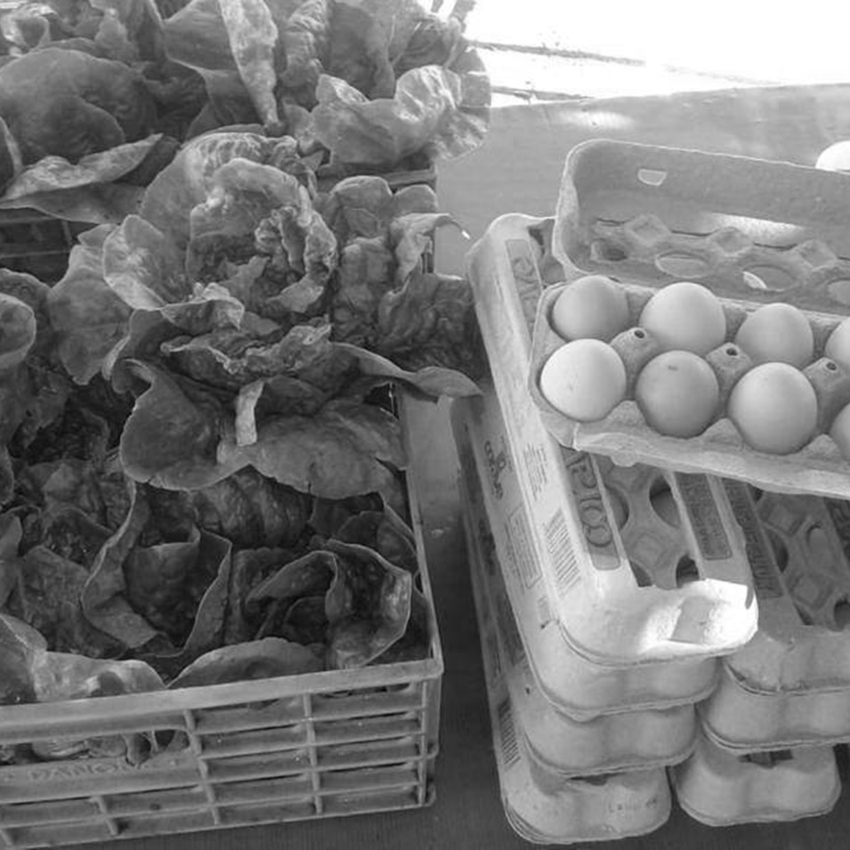
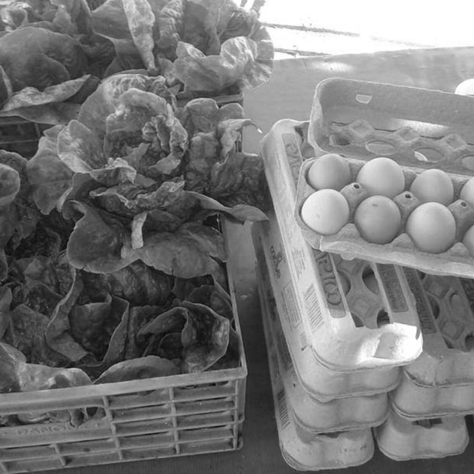

Medio ambiente
Consideramos fundamental aportar a la concientización y creación de prácticas
comunitarias que tengan por objetivo revertir los servicios ecosistémicos y crear condiciones
de vida sostenibles.
Creemos necesario incentivar la construcción de vínculos y redes que construyan
territorialidad y sentido de pertenencia con el lugar.
Agroecología solamente ampliar
Este proyecto se encuentra ubicado en el barrio La Perla, en la localidad de Alta Gracia,
departamento Santa María, en la provincia de Córdoba, Argentina.
El objetivo de este proyecto es el de impulsar un desarrollo local y sustentable con la
creación de una huerta y junto con la cría de pollos. Se busca fomentar el empleo y crear
condiciones de vida saludables y sostenibles en el tiempo, en el barrio en que se está
realizando el proyecto.
Por ello, nuestros objetivos específicos son:
- Transmitir herramientas teóricas y prácticas que posibiliten sacar el mayor provecho de la
tierra disponible para su producción.
- Crear una unidad productiva que genere alimentos sanos y saludables para consumo
local.
-Fortalecer los lazos sociales entre los habitantes del barrio a través de la promoción de
ideales de construcción territorial colectiva y cooperativa.
 
